Para empezar, el conocimiento y la sabiduría de las personas, desde los primeros años, deben de tener
experiencias buenas desde pequeños. Hay que comenzar y terminar con un buen modelo pedagógico. Todas las personas
somos distintas.
Los modelos pedagógicos son estructuras de un proceso de aprendizaje. Son cosas lógicas:
El modelo pedagógico actual se inventó en Prusia en el año 1750/1850 y también empezaba una de las revoluciones industriales, siguen estando en vez de clases se parecen bastante a las cárceles, no les permiten hablar, una hora encerrados, al final de la hora una vil alarma, etc. No se como hemos llegado a la disparatada idea que en una clase se aprenderá mejor si todo el mundo aprende lo mismo al mismo tiempo.
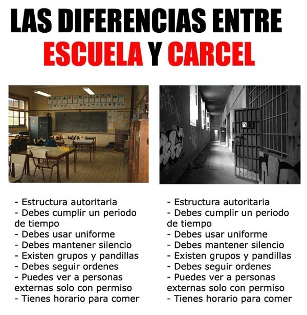 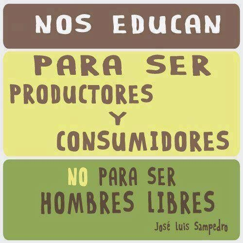Las clases parecen líneas de producción, los niños se clasifican por edad no por intereses. No los hacen pensar, analizan la capacidad de memoria que tienen y los hacen obedecer. Los niños se acostumbran a hacer las cosas de manera mecánica por una nota. Como si una clase fuera una fábrica.
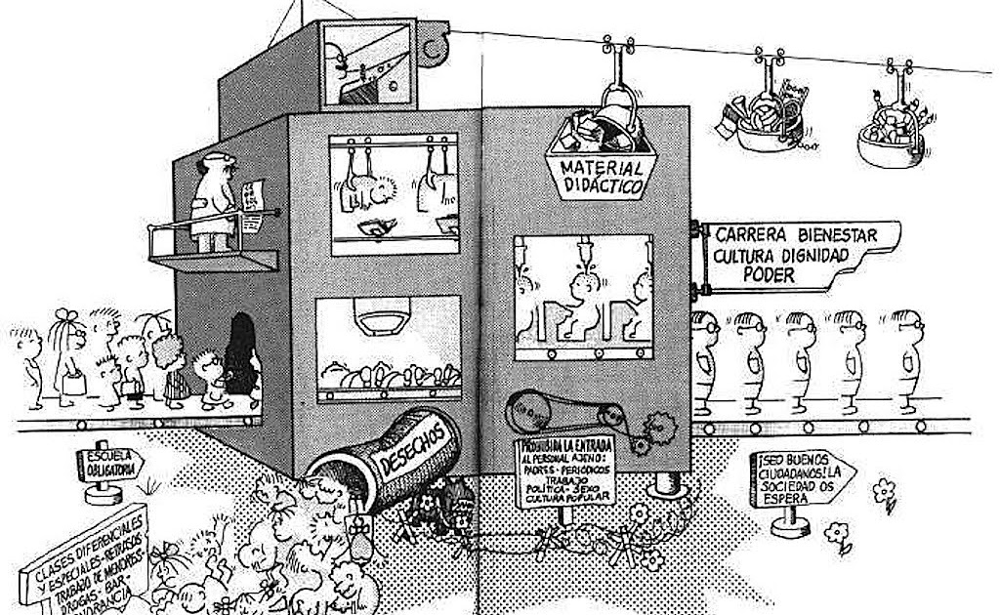Se evaluan por examenes y no saben lo que estan haciendo, utilizan la memoria y no piensan, interesa sacar una buena nota que ponen alegres a los padres y los profesores. Los niños tienen la capacidad de ser creativos y pensamiento divergente, pero al estar 10 años en un colegio, solo les dicen que hay una respuesta correcta, que la capacidad de creatividad se marcha y los quieren formar como empleados y los enseñan a obeceder. Frustan a muchas personas y le dicen usted es malo en esto, has perdido un año. Sin embargo, en este sentido de repetición y buena memoria, no tiene nada que ver con otra personas que son creativos y disruptivos, les obligan a memorizar y repetir, no hay ningun incentivo, aparte de la nota, seria un paradigma que vamos a abordarlo mas adelante.
Cuando sean educados durante una decada o más, ustedes llegan a la universidad y se encuentran un problema actual, una carrera o grado se tarda de 4 a 7 años, eso es demasiado tiempo. Otro tema muy importante es el ratio, aquí se varía con los colegios que son siempre 1/30, los primeros cursos de la carrera 1/50 y las ultimos 1/15, de medias, lo principal es el estrés, tanto para el profesor como de los alumnos.
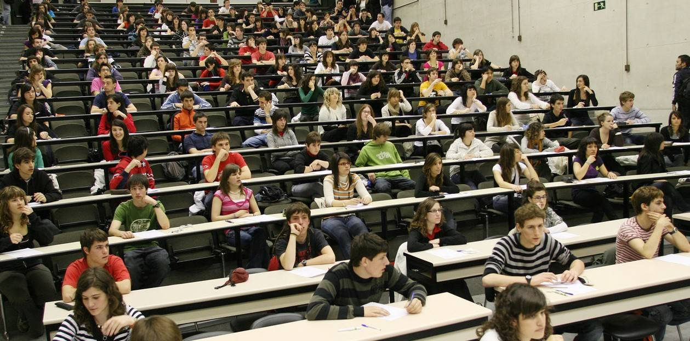 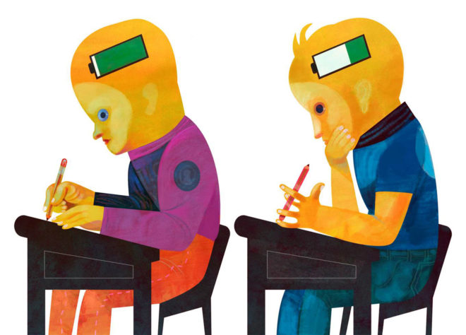Una de las cosas mas infelices es el tiempo que tarda en un desplazamiento desde tu pueblo a la capital, lo normal es que haya una universidad en cada pueblo, igual que los hospitales. Además los costes de la educacion son altos. La educacion publica en los colegios tienen los costes reducidos y viene con un modelo de revolucion industrial, te enseñan a obedecer, como va a ser una persona emprendedora o creativa si durando 10 u 11 años que si piensa así esta equivocada, que no cuestione al profesor que tiene toda la razon, esos paradigmas estan desactualizados. Otro problema es que siempre os obligan examanes en vez de proyectos, practicas, etc. Cuando haceis una situación en grupo, un proyecto o un informe, tienen un problema y tienen que generar una respuesta a esa problematica, con todos los recursos disponibles, pero en un examen solo quieren vuestra capacidad de memoria. Cada alumno es diferente, pues esta la misma repeticion para todos y no es así.
Antes de nada, debemos saber que hay profesores que tienen el mismo recurso con las mismas fotocopias en 20 o 30 años o la misma zona de confort, con un programa educativo en clases iguales todos los años, eso es un hito en la mediocridad. No se dan cuenta que la mayoria de las cosas estan evolucionando mucho, en recursos y herramientas. Cuando vamos a conseguir un trabajo en una entrevista con el curriculum vacio, el que te analiza piensa que no tiene nada de experiencia. Si ha sido esclavizado con una doctrina de 10 años en el colegio y 6 o 7 en la universidad, como van a emprender las personas.
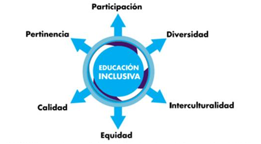Empezando desde el colegio, la educación tiene que ser preparada como una vida real. Para empezar, si necesita un niño que despeje una ecuación, debe de saber que eso va a ocurrir en una ocasión como esta, que lo pongan en contexto o que pasa por esto, que lo expliquen. Cuando un niño esta en el colegio debe aprender a trabajar en proyectos, es muy importante, trabajar los proyectos en grupos, no solos.
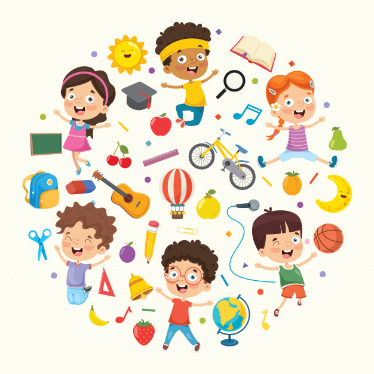Para comenzar, los profesores, deben capacitarse y renovarse, pero que no se estandarizen, hay que darse cuenta que las personas son diferentes, aunque sean 2 o 40, son diferentes. El tema de asignaturas, lo mas importante es la nutrición o la alimentación, eso es lo principal en la vida de una persona, es lo mas básico, comer saludablemente y hacer buenos ejercicios. Si no tenemos una buena salud no tendremos buenos pensamientos. Lo mas básico es tener el ratio en diez alumnos para un profesor, son 10 personas diferentes, eso no se puede olvidar. Siguiente cosa importante es la creativdad, los profesores castigan a los niños, asi no los estan formando en la vida real, los estan metiendo en burbujas irreales y no reciben una buena salud mental.
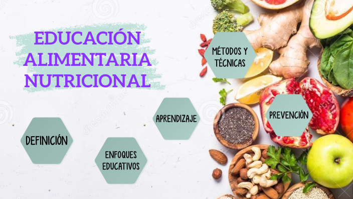Si las instituciones siguen igual que antes, deben de darse cuenta que siguen enseñando a los niños a ser obreros y personas que obedezcan. Si se sigue manteniendo que la educación es un negocio, no sirve de nada, la educación debe ser flexible. Otro problema principal son las tareas, como va a tener un niño mas tareas complejas para que las haga en su casa, eso no tiene sentido. La educación debe de ser una experiencia agradable. Deben de enfocar y entender la singularidad de cada alumno.
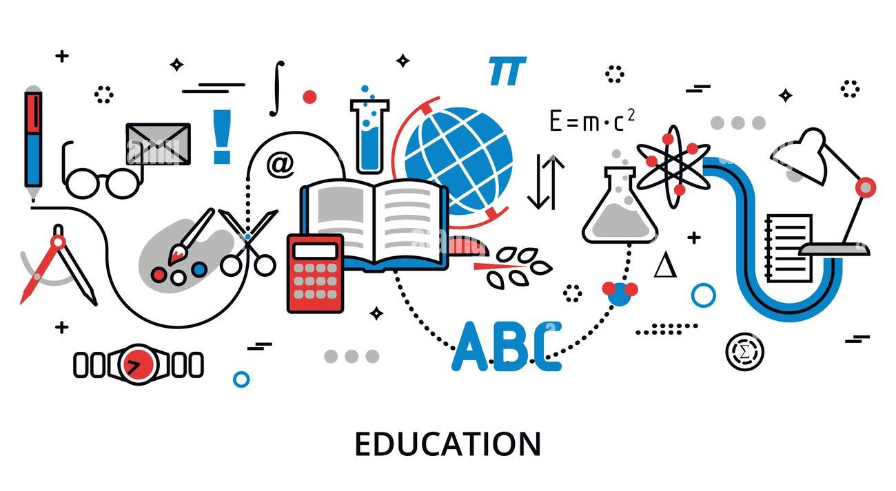Para comenzar en las universidades, las personas tienen habilidades diferentes, eso esta bien. El tiempo de la educación deber de ser menor, ¿ 5 o 7 años ?, hay plataformas que lo certifican en 1 o 2 años, hay que hablar con las universidades y los ministerios, para que regulen este tiempo de cosas. El tema de los desplazamientos, lo primero es que debería de haber una universidad en cada pueblo, porque las personas que todavia después de 10 u 11 años del colegio, y no tiene ni curriculum ni dinero (que son papeles impresos), buscan un trabajo en vez de tener las universidades mas cercanas y gratis igual que los colegios. Por último, todo el modelo tiene que estar enfocado al pensamiento crítico, a analizar y cuestionar.
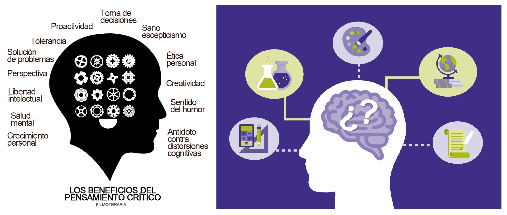Ahora las capacitaciones son diferentes, toda la parte de microlearning ha crecido mucho y dan "píldoras" de modulos específicos, para hacer proyectos que tengan buenos análisis y buenas investigaciones. Es muy importante que debemos pensar, eso es fundamental. El tema de los profesores deben también de usar las nuevas píldoras que les enseñan en poco tiempo, las cosas que son nuevas en sus asignaturas, sin zona de confort. Por útimo aquí, no hay que olvidar nunca el ratio en las universidades, que estan siempre dentro del estrés.
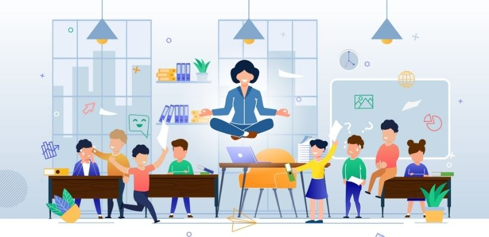El tema del costo debe de ser gratuito, puesto que se dijo antes, que el dinero es papel y añado ahora que estan transformando la mentira de los papeles en la mayor mentira del vil dinero electrónico, que va a ser una mayor ficción electrónica, que nos van a mentir mas todavía. Lo siguiente son las investigaciones, muy poca gente las mira en la biblioteca de la universidad. Hay que fomentar la disrupción, que no hay que estar callados como se ha pasado la decada de los colegios, venimos adoctrinados para obeceder, tenemos que preguntar, pensar, ser creativo y experimentar. Las instituciones cobran las matriculas, es decir, que te llevas 5 o 7 años aprendiendo, no cobrando si no pagando. La educación no puede ser un negocio.
Yo no soy la única persona que hacen estos tipos de análisis, hay dos razones porque no se hacen los cambios.
Primero, las instituciones, si alguien aprueba examenes con 5, practicas con 5, etc, si solo hace las repeticiones
sin hacer creatividad ni emprender, no garantiza que sea exitoso en la vida profesional.
La segunda, son razones políticas, para empezar, a los gobiernos de todo el planeta les interesan mantener ignorantes
a la gente, para que no protesten ni cuestionen, para que piensen que todo va bien.
¿Cuantos tutoriales hay en televisión?
¿Cuantas noticias son verdaderas?
¿Cuantas películas o series son saludables, sin peleas, sin discusiones, sin muertes?
0 = IGUAL A CERO = 0